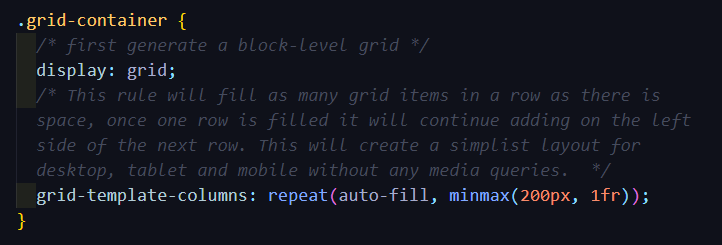

CSS Grid (aka "Grid") is arguably the most powerful tool for layouts available in CSS, being a 2-dimensional system, rather than flexbox, which is a 1-dimensional system. CSS Grid allows you to apply CSS rules to both the parent element (Grid Container) and the children elements (Grid Items).
Although, Grid is a more powerful tool than Flexbox, using them in conjunction can work very well together. Similarily to Flexbox, the order of HTML elements doesn't matter. You are able to use CSS to place them in any order and in any part of your Grid layout.
Grid was created specifically to solve the layout problems web developers until now have been using other tools in 'hacky' ways to get layouts that they want.
As of March, 2017, most broswers shipped native, unprefixed support for Grid. Internet Explorer 10 and 11 on the other hand support it, but it's an old implementation with outdated syntax (what else is new?).
This indicates the browser version that supports the feature at that version and newer.
PRO TIP: Firefox has great inspector tools for developing with Grid. You can toggle a display for each Grid layout on your page, which shows the numbers of the rows and columns for easy visuals.
Desktop
- Chrome: 57
- Firefox: 52
- Opera: 44
- Edge: 16
- Safari: 10.1
Mobile/ Tablet
- Android Chrome: 81
- Android Firefox: 68
- Android: 81
- iOSSafari: 10.3
To get started you have to define a container element as a grid with display: grid, then you can define the columns and rows with display-template-columns and display-template-rows. Another useful CSS rule to use is grid-gap, which just puts a margin between grid items horizontally and vertically.
One of the best parts of Grid is making responsive layouts with no media queries! Let me show you the magic...
Grid Container
You can define it via the parent by grid-template-areas.
Values:
grid-area-name- the name of a grid area specified by the Grid Item's grid-area.- a period signifies an empty grid cellnone- no grid areas are defined
Additionally the Grid Item will have to use this property grid-area to define the name of the grid item so that the code above works for the Grid Container.